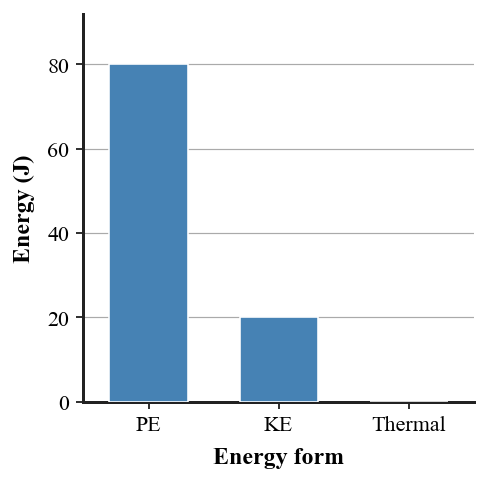

Review how impulse changes momentum, how momentum is conserved in interacting systems, how work transfers energy, and how conservation laws connect collisions, motion, machines, and real-world energy decisions.
Unit at a Glance
What ties Unit 4 together?
Unit 4 follows two conservation stories. Momentum tracks motion through interactions such as pushes, collisions, recoil, and explosions. Energy tracks the ability to cause change as work transfers energy and energy shifts among kinetic, potential, thermal, chemical, and other forms.
1Describe motionMass and velocity determine momentum.
→
2Change momentumForce acting through time produces impulse.
→
3Track systemsMomentum and energy accounting depend on system boundaries.
→
4Follow energyWork transfers energy; conservation tracks where it goes.
Unit Vocabulary
Words worth knowing cold
These terms are grouped by the section idea they support.
Momentum & Impulse
momentumimpulsechange in momentumcontact timeforcevelocity
Momentum Conservation
conservation of momentumsysteminternal forceexternal forceelastic collisioninelastic collisionrecoilvector quantity
work-energy theoremnet workconservation of energyenergy transformationthermal energyfriction
Energy in Society
energy sourceenergy carrierefficiencyrenewable energyfossil fuelgeothermal energyperpetual motion
Formula & Relationship Limit
The eight relationships Unit 4 expects
These are the complete symbolic relationships allowed by the Unit 4 assessment plan.
Momentum
$p=mv$
Momentum depends on mass and velocity, so it also has direction.
Impulse
$J=Ft$
Use for a force acting over a time interval in the simple impulse model.
Impulse–Momentum
$J=\Delta p$
Impulse equals the change in momentum produced by an interaction.
Momentum Conservation
$p_{\text{before}}=p_{\text{after}}$
Valid for the chosen system when no net external impulse acts.
Work
$W=Fd$
Use when the force acts in the direction of the displacement in the simple model.
Power
$P=\frac{W}{t}$
Power is how quickly work is done or energy is transferred.
Gravitational Potential Energy
$PE=mgh$
Use for changes in gravitational potential energy near Earth with a chosen reference height.
Kinetic Energy
$KE=\frac{1}{2}mv^2$
Kinetic energy depends on mass and the square of speed.
Keep the conditions straight: momentum conservation depends on the chosen system and external impulse; work requires displacement in the force direction; kinetic energy depends on speed squared, not velocity direction.
Students will apply the work-energy theorem and conservation of energy to explain motion, stopping distance, energy transformations, and mechanical systems.
I can…
I can explain that work changes energy.
I can use the work-energy theorem to connect net work and change in kinetic energy.
I can explain how potential energy transforms into kinetic energy and thermal energy.
I can explain why energy is conserved even when mechanical energy seems to “disappear.”
I can analyze energy bar charts or diagrams for roller coasters, pendulums, ramps, and collisions.
Summary
Net work changes an object’s kinetic energy.
Energy can transform among kinetic, gravitational potential, thermal, and other forms.
Mechanical energy can decrease while total energy remains conserved because energy has shifted into thermal or other forms.
Friction usually transfers organized mechanical energy into thermal energy.
System boundaries determine whether energy is described as transformed within the system or transferred across its boundary.

Energy bar charts help track how the total stays accounted for while energy changes form.
Section vocabulary:work-energy theoremnet workconservation of energyenergy transformationthermal energymechanical energysystemfriction
DOK 1
Recognize conservation, work-energy, thermal energy, and energy-transformation ideas.
DOK 2
Interpret energy bar charts and connect net work to kinetic-energy change.
DOK 3
Explain where “missing” mechanical energy went and connect diagrams, friction, and system boundaries.
DOK 4
Critique a complete energy model for an unfamiliar mechanical system using multiple representations.
Common traps to avoid
Energy disappears when motion stops
Track energy transferred to thermal energy, sound, deformation, or other forms.
Mechanical energy is always conserved
Total energy is conserved; mechanical energy can transform into thermal energy.
Ignore the system boundary
Whether energy is “inside” or “transferred” depends on the chosen system.
Bar charts are separate from equations
Both are accounting tools for the same energy changes.
Classify familiar collisions, work situations, and energy forms.
DOK 2 · Apply
Calculate and interpret
Use the eight Unit 4 relationships for momentum, impulse, work, power, $PE$, and $KE$.
Interpret collision models and energy bar charts and connect numerical answers to physical meaning.
DOK 3 · Reason
Connect and critique
Correct misconceptions about momentum, impulse, work, speed-squared energy, system boundaries, and “lost” energy.
Connect diagrams, before-and-after models, formulas, and written explanations.
DOK 4 · Synthesize
Build a complete model
Design, defend, or critique a momentum-energy model for an unfamiliar real-world system.
Evaluate competing explanations or energy claims using evidence, conservation laws, and tradeoffs.
Final Check
Before the summative, can you do these without guessing?
Vocabulary & Concepts
Distinguish momentum from impulse and work from power.
Distinguish kinetic, potential, mechanical, and thermal energy.
Explain systems, internal/external forces, energy sources, carriers, and transformations.
Representations & Calculations
Use all eight Unit 4 relationships with correct quantities, direction, and units.
Compare before-and-after momentum for collisions and recoil.
Read energy bar charts and trace energy transformations.
Reasoning
Explain why longer contact time can reduce collision force.
Explain why momentum can be conserved even when objects stop or stick.
Explain where mechanical energy goes when friction acts and critique impossible energy claims.
If you can track the chosen system and explain where momentum or energy goes—not just substitute numbers into formulas—you are reviewing at the level Unit 4 expects.